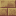

切制赭金砂砖块：厂房山墙的暖黄砌面。
参数
材质赭金砂
形制砖块
切石产出1 块 -> 1 块
详细教程
怎么获得
只能切石机出：任意赭金砂材质方块进切石机，选砖块，1:1。矿石料不算便宜，所以先想好墙的尺寸再动手切。
砖块在材质标签里，能切回整块或改切砖块台阶，方向可逆，规划变了不心疼。
怎么用
土黄砖块铺大面积特别像夯土砖墙，砖缝细、颜色暖，做厂房山墙和仓库正面比整块更有细节。
它和安山机壳、黄铜管道的色温完全一致，机器贴着墙放不会突兀；沙漠和干旱地形里，它是少数不会和沙子混成一片的石材。
厂房山墙用整片砖块，檐口再压一条砖块半砖，土黄的墙就不会显得像临时搭的棚子，而像正经的砖砌厂房。
搭配与坑
配安山机壳、黄铜、铁窗框是厂房的默认配色；墙顶压一条赭金砂台阶，收边就干净了。
坑是阳光直射下会偏亮偏黄，和砂岩更接近，所以墙脚最好用深板岩或石灰岩勒脚把边界咬住。
获取方式
被谁使用
被 3 个物品的 3 条配方用作材料。